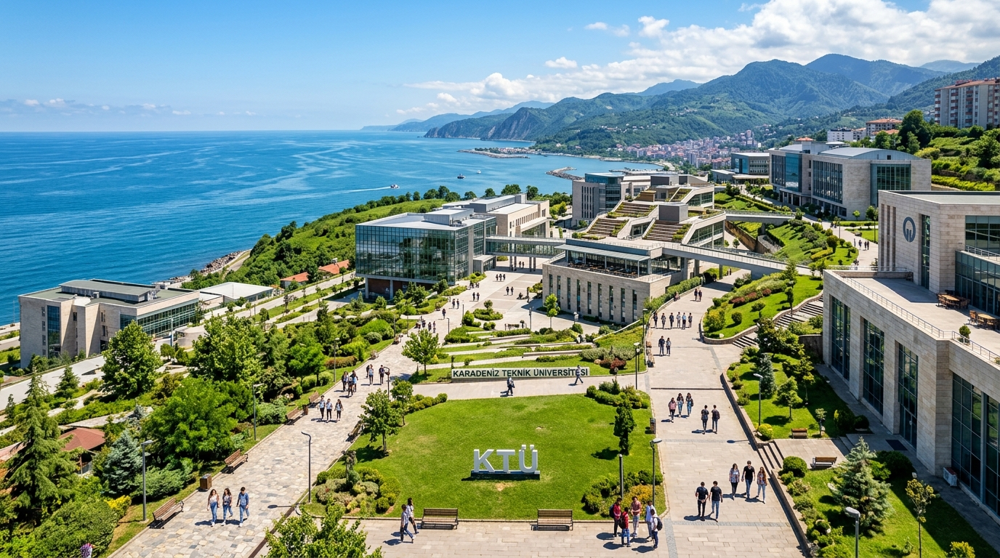
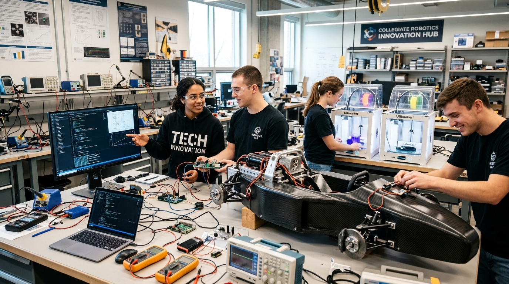
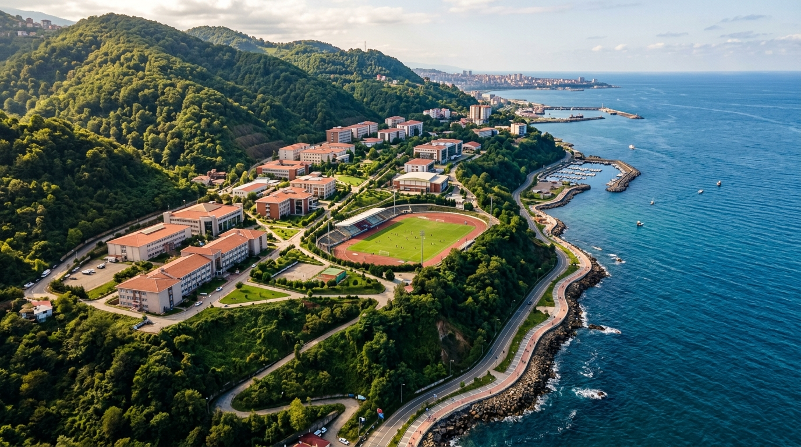
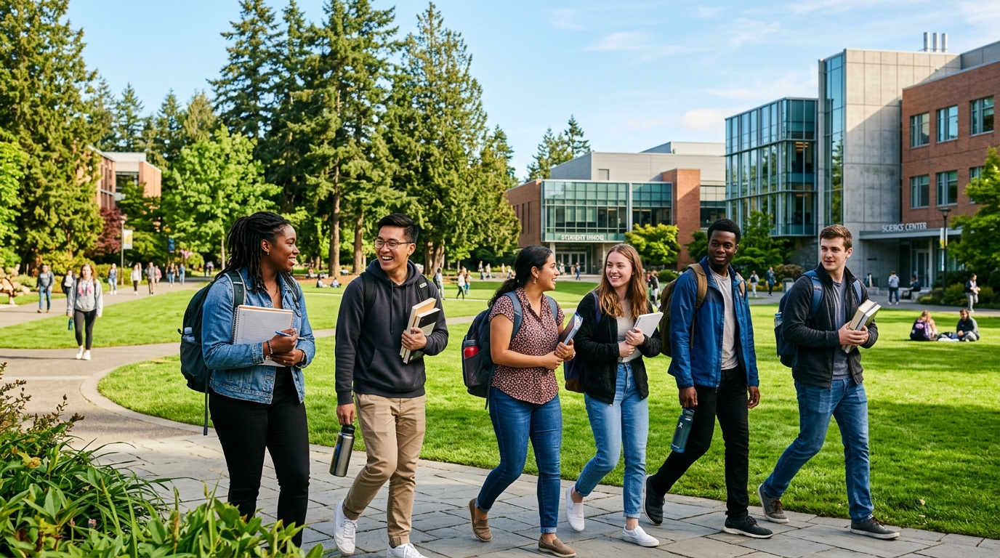
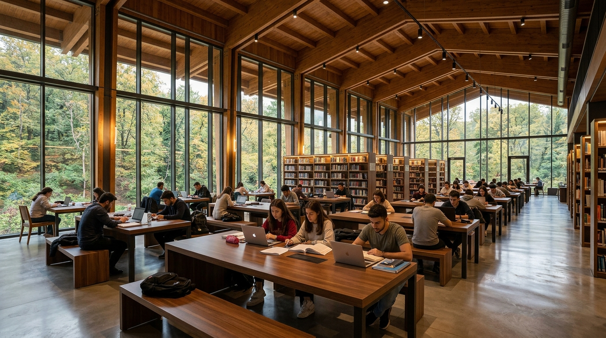
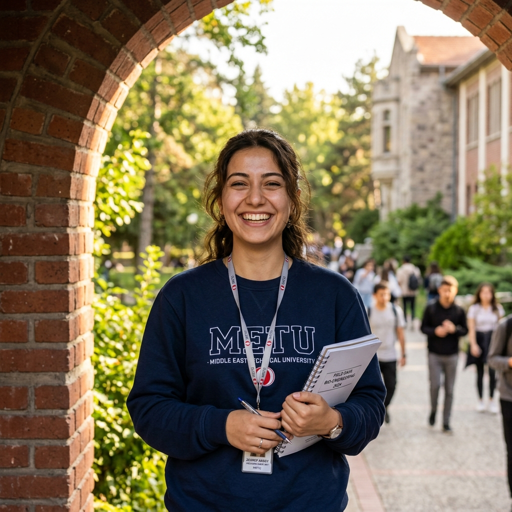

KÜRESEL SIRALAMA
KÜRESEL SIRALAMA
12 Ekim 2026 • Mühendislik Fak.
Maden Mühendisliğimiz Türkiye'de 1., Dünyada 14. Oldu
ScholarGPS 2026 bağımsız değerlendirme raporuna göre bölümümüz dünya elitleri arasında yer aldı.
Devamını Oku
1955 • Türkiye'nin İlk ve Öncü Araştırma Teknik Üniversitesi
AŞAĞI KAYDIRINKaradeniz Teknik Üniversitesi'nde ve dünyanın öncü araştırma kurumlarında yürütülen bilimsel çalışmalar olmadan; derin deniz ekolojisinden yapay zekaya, yerli savunma sanayiinden yaşam kurtaran tıbbi tedavilere kadar geleceğin büyük atılımları var olamazdı. 1955'ten beri bilimle üretiyor, Karadeniz'den dünyaya ulaşıyoruz.

Mühendislik Fakültesi öğrencilerimiz tarafından kurulan Creatiny takımı, vakum tüplü raylı sistemlerde 850 km/s hıza ulaşan yerli prototipiyle üst üste üçüncü kez ulusal birincilik kupasını Trabzon'a getirdi.
HİKÂYENİN TAMAMINI OKUYUN
KÜRESEL SIRALAMA
ScholarGPS 2026 bağımsız değerlendirme raporuna göre bölümümüz dünya elitleri arasında yer aldı.
Devamını Oku YAPAY ZEKA & VERİ
YAPAY ZEKA & VERİ
Yüksek başarımlı GPU kümesi ve siber güvenlik araştırma merkezi araştırmacıların hizmetine sunuldu.
Devamını Oku
DENİZ BİLİMLERİDerin deniz dip suları ve hidrojen sülfür katmanlarının iklim değişikliğine etkileri inceleniyor.
Devamını Oku

1955'ten günümüze bilim, teknoloji ve toplumsal kalkınmanın öncüsü.

Tarihi İpek Yolu'nun Karadeniz'e açılan kadim limanı Trabzon; yemyeşil doğası, sonsuz deniz ufku ve köklü kültürüyle Kanuni Kampüsü'nün ayrılmaz bir parçasıdır. Burada eğitim almak, yalnızca sınıflarda değil, Karadeniz'in ritminde hayatı öğrenmektir.